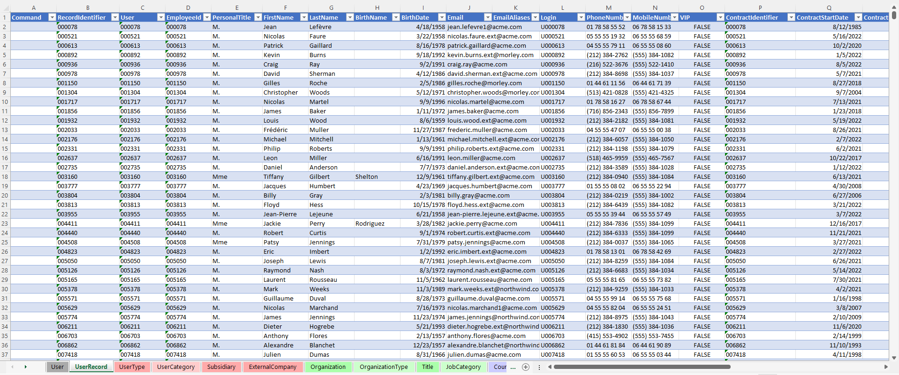
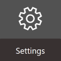
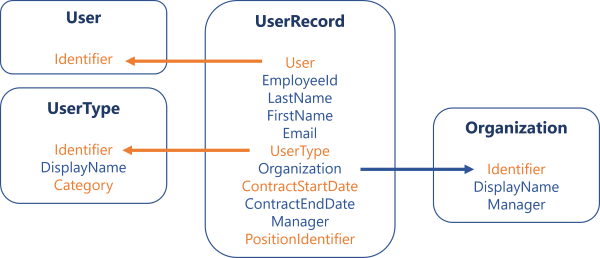
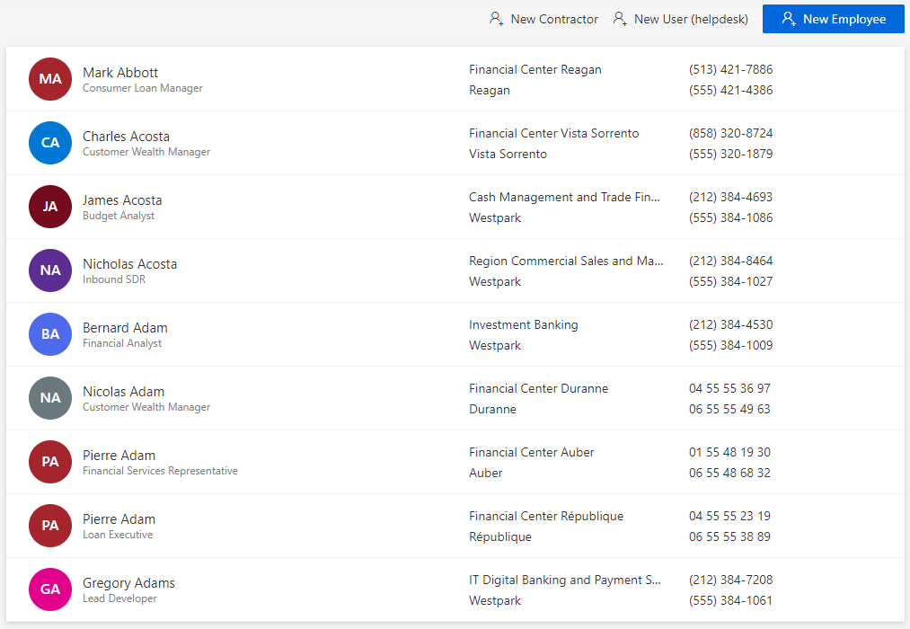
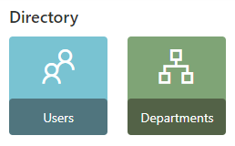
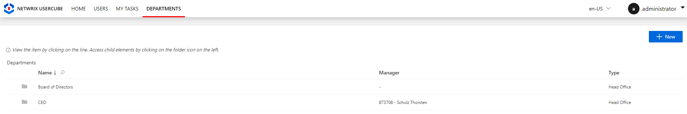

Load Identities to Identity Manager
How to load identities into Identity Manager for the first time using a basic data model in the form of a template MS Excel file.
Overview
Loading the digital identities into Identity Manager is the very first task you have to perform, once you installed the development environment.
The initial workforce repository is going to be the first version of a comprehensive directory containing all users in the organization. This directory is crucial in setting up the identity lifecycle management features and managing assignments of entitlements.
Identity Manager contains a template model, downloadable as an Excel file. Below is an example of a part of the UserRecord tab, used in Identity Manager's demo:

Useful data
Not all data is useful for identity governance and administration. Thus, to start designing the repository, you must be aware of which data is necessary and which is unhelpful. Useful data is the data that:
-
needs to be provisioned to the managed applications;
For example, if you need to provision users' phone numbers in a given application, then you should fill in the workforce repository's
Phone Numberproperty. -
is needed to manage identities' lifecycles;
For example, consider that internal employees must be managed by HR officers only, then you'll need to identify whether users are internal employees or external contractors. Then you should make sure that you fill an
Employee Typeproperty with at least two values: one for internal employees, and one for external contractors. -
is needed to automatically grant permissions.
For example, if a user's position title ("manager" for instance), defines what users currently do, and thus what permissions they need, then you should make sure to fill in a property storing the position's title in the workforce repository.
Participants and Artifacts
Integrators may need the help of the HR department who knows the organization in order to get the identity and organizational data. After the initial loading, the HR department can review the data to confirm its accuracy.
| Input | Output |
|---|---|
| Identity Manager Server (required) HR data (required) Third-party staff data (optional) |
Initial workforce repository |
See the Install the Development Environment topic for additional information
Load Identities
Load identities for the first time by proceeding as follows:
-
On the home page, click on Settings in the Configuration section.

-
On the Workforce > Data Upload page, download the empty Excel template.
-
Collect identity and organizational data.
If you don't know where to start, identities most often include long-term employees, temporary employees (such as interns and temps) and external contractors. The template contains a
UserTypetab that lists all the types of workers that you want to include, i.e. the usual identities listed just before, but also partners, clients, even applications.Workforce should include obviously all current workers, but also incoming workers, and those who left the organization in the past XXX (time period defined by the rules of the security officer). It is interesting to have past workers in order to understand the process and ensure that they are supposed to be orphaned. See the Review Orphaned and Unused Accounts topic for additional information.
Employees
The workers that are directly employed by the organization usually have their data stored in the HR system.
Contractors
Often third-party workers like contractors are not part of the HR system. Then, there are a few possible solutions to get their data:
- through purchasing department if it doesn't imply any personal data security breach;
- manually with knowledgeable people, for example department managers and assistants;
- through a filter on data from available directories, for example on the email address if it contains a specific string like
.ext@; - through an Active Directory extraction with a filter on an attribute that works with a specific part, for example on the employee identifier.
-
Fill said template with the data you collected.
The Excel file contains several tabs which organize data, but not all tabs and columns are mandatory. You can find more details about the Template Description. Below are the minimum recommended attributes (mandatory in orange):

Click here to download a template example.
Every object (so every tab) of the directory must have a key, which is an attribute:
- unique, i.e. designed to uniquely identify an object/resource, one key can't be shared;
- immutable, i.e. must not change during the whole lifecycle of the object/resource, even for renaming for example;
- consistent, i.e. identical everywhere the object/resource is specified.
Among other things, a consistent key allows identities to use the same login in all applications. A consistent key is also essential to form the link between identities and the other objects (organizations, titles, etc.).Create your initial workforce repository with only recommended attributes.
As we aim to quickly enable Identity Governance and Administration (IGA) actions (like the review of orphaned and unused accounts, or access certification, etc.), Netwrix Identity Manager (formerly Usercube) recommends loading identities with only necessary data. The model can be completed later.
Moreover, Identity Manager's Query module can help gather data from other systems.
For example, let's say that contractors' phone numbers are found only in the AD. Then we can wait for the connection of Identity Manager to the AD, and finally use the Query module to collect missing data. In this case:
1. Upload theDirectory.xlsxfile with only recommended data, validate and synchronize as explained on this page.
2. Connect the AD, synchronize AD data, update correlation and classification. See the Categorize Resources topic for additional information.
3. Follow the usual query procedure to request phone numbers from the AD.
4. Ensure you display a key (for exampleEmployeeIdoremail) to master the order of the displayed data.
5. Download the report.
6. Copy the report's columns one by one to paste them into the Directory.xlsx file.
7. Synchronize directory data. -
Back on the Workforce > Data Upload page, upload the filled Excel file to the server in order to feed the data back to Identity Manager.
The latest uploaded file overwrites the previous one.
-
Click on Verify and Synchronize to check the file's consistency and import its data into Identity Manager.
Now you are able to view users' pages in the directory.

Verify Identities Loading
In order to validate the process:
-
Check manually a sample in the user directory accessible from the home page. You should verify at least your own sheet and the sheets for your hierarchy.

-
Check that every organization includes a manager. Organizations are accessible from the department directory on the home page.


If the system contains many organizations, then it is also possible to list each organization with its manager through the Query module.
-
Create reports with indicators on the number of workers per type or per organization for example (through Identity Manager's predefined reports, the Query module or Power BI), in order to ensure that Identity Manager's content sticks to reality.
See the Generate Reports topic for additional information.